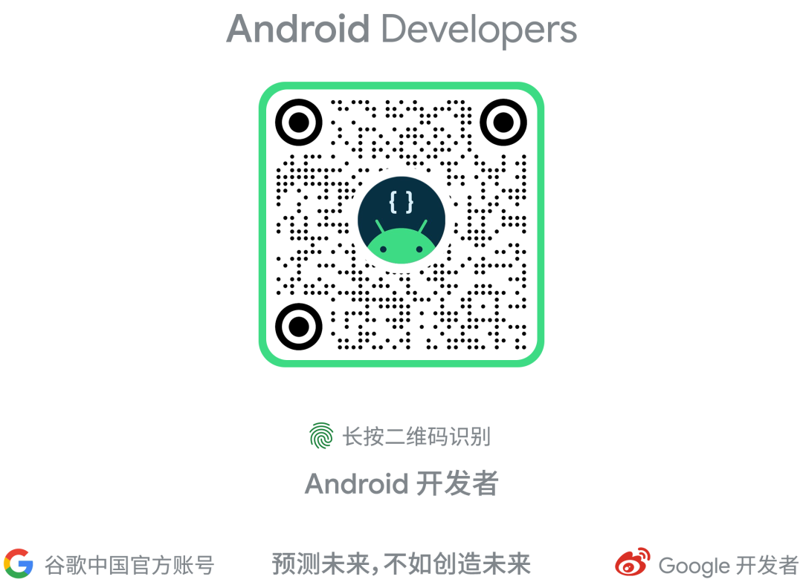

Jetpack Compose https://developer.android.google.cn/jetpack/compose Square https://squareup.com/ Monzo https://monzo.com/ Twitter https://twitter.com/ 为什么要采用 Jetpack Compose https://developer.android.google.cn/jetpack/compose/why-adopt
△ Jetpack Compose 1.0 正式发布
我们设计 Compose 的目的是让您更快、更轻松地构建原生 Android 应用。通过完全的声明式方法，您只需描述您的用户界面，剩下的就交给 Compose 来处理。随着应用状态的变化，您的 UI 会自动更新，这使得快速构建 UI 变得更加简单。直观的 Kotlin API 可以帮助您用更少的代码构建出漂亮的应用。Compose 可以原生访问既有的 Android 代码，这意味着您可以按自己的节奏采用它。强大的布局 API 和代码驱动的 UI 使得适配不同规格的设备更加轻松，比如平板电脑和可折叠设备，Compose 还将支持 WearOS 以及 Homescreen Widgets 等更多使用场景！
互操作性: Compose 可以和既有的应用进行互操作。您可以将 Compose UI 嵌入 View，反之亦然。您可以只在屏幕上添加一个按钮，也把自己创建的自定义视图保留在现在用 Compose 打造的界面中。 Jetpack 集成: Compose 和大家熟知且喜爱的 Jetpack 开发库天然整合。通过与 Navigation、Paging、LiveData (或 Flow/RxJava)、ViewModel 和 Hilt 的整合，Compose 可以与您现有的架构完美共存。 Material: Compose 提供了 Material Design 组件和主题的实现，使您能够轻松构建符合您的品牌个性的美观应用。Material 主题系统更容易理解和追踪，再也不需要翻阅多个 XML 文件。 列表: Compose 的 Lazy 组件为数据列表的呈现提供了一种简单扼要且功能强大的方式，而且将模版代码精简到了最少。 动画: Compose 简明的动画 API 让您可以更轻松地打造出让用户眼前一亮的体验。
在应用中采用 Compose https://developer.android.google.cn/jetpack/compose/interop Compose 和其他库 https://developer.android.google.cn/jetpack/compose/libraries Compose 中的主题 https://developer.android.google.cn/jetpack/compose/themes 列表 https://developer.android.google.cn/jetpack/compose/lists 动画 https://developer.android.google.cn/jetpack/compose/animation
新工具
Jetpack Compose 的完全声明式方法从根本上改变了用户界面的开发方式。为了支持新的工作流程和不同的思维方式，我们正在提供新的工具，专为 Compose 而设计，并在一些现有工具中增加对 Compose 的支持。
Compose Preview
Android Studio Arctic Fox 中新加入的 Compose Preview 可以让您同时查看不同状态、浅色和深色主题，或是不同字号的 Composables，使组件的开发更容易，再也不必先将整个应用部署到设备中了。通过对字词的实时编辑，您可以实时看到更新，而无需重新编译项目。
Android Studio Arctic Fox https://developer.android.google.cn/studio
Deploy Preview
如果您曾经希望能够直接在设备上测试 UI 的一部分，而不需要通过导航一步步浏览到您正在调整的界面中，那么您一定会喜欢新的 Deploy Preview: 只需为您的 Composable 创建一个预览，就可将其直接部署到设备上，从而快速进行迭代。
Layout Inspector 支持 Compose
Layout Inspector 增加了对 Composables 的支持，让您可以放心地混用 Compose 与既有的 Views。
Compose 发布路线图
采用任何新的框架都需要经过评估，尤其是像新的 UI 工具包这样意义深远的东西。为了帮助您做出明智的决策，确定现在是否是采用 Compose 的合适时机，我们给出了一个公开的路线图，和大家分享我们对 Jetpack Compose 的后续构建计划:
学习 Compose
为了帮助您和您的团队掌握 Compose，我们准备了大量的学习资源:
教程 - 快速实际体验 Compose，以及了解声明式编程: https://developer.android.google.cn/jetpack/compose/tutorial 文档 - 从 "Compose 编程思想" 、"状态和 Jetpack Compose" 以及 "架构式层级" 这样的基础话题，到核心 API 的使用指南，包括布局、导航和测试，以及针对开发者工效或者工具等内容。覆盖任何您需要了解的课题。
Jetpack Compose 使用入门 https://developer.android.google.cn/jetpack/compose/documentation Compose 编程思想 https://developer.android.google.cn/jetpack/compose/mental-model 状态和 Jetpack Compose https://developer.android.google.cn/jetpack/compose/state 架构式层级 https://developer.android.google.cn/jetpack/compose/layering Compose 中的布局 https://developer.android.google.cn/jetpack/compose/layouts 使用 Compose 进行导航 https://developer.android.google.cn/jetpack/compose/navigation 测试 Compose 布局 https://developer.android.google.cn/jetpack/compose/testing 开发者工效 https://developer.android.google.cn/jetpack/compose/ergonomics Compose 工具 https://developer.android.google.cn/jetpack/compose/tooling
Codelab - 如果您更喜欢边用边学，我们准备了 9 个 codelab 来帮助您全面掌握 Compose (别忘了来试试全新的高级状态和副作用 codelab)。
Compose codelab
https://developer.android.google.cn/courses/pathways/compose
高级状态和副作用 codelab
https://developer.android.google.cn/codelabs/jetpack-compose-advanced-state-side-effects#0
视频 - 准备点零食，然后跟着视频学习 Compose 的一切: https://www.youtube.com/c/AndroidDevelopers/search?query=%23JetpackCompose
示例应用 - 我们准备了 8 个官方示例，它们展示了一系列的 API 及其用例: https://github.com/android/compose-samples
https://developer.android.google.cn/courses/pathways/compose
祝 Compose 开发愉快！
我们坚信，Jetpack Compose 是一次巨大的飞跃，让我们得以更快、更轻松地打造卓越的 UI；我们非常期待看到大家使用 Compose 打造的成果。现在 Compose 1.0 稳定版本已经到来，是时候开始使用了，没有任何事情比得上亲自上手编写代码哟！祝大家创作愉快！
您对产品的反馈及问题对我们非常重要，欢迎通过下方二维码向我们提交反馈。您的问题有可能出现在下一期的 FAQ 中并获得解答。感谢您的支持！
点击屏末 | 阅读原文 | 即刻分享您的使用反馈
推荐阅读


发表评论 取消回复